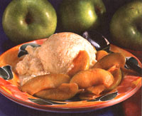

Mother's Kitchen
Four nutritious meals your family will love that can be hot and ready in 20 minutes!
Around midafternoon most any day at the school where I work, my female coworkers ask one another, "What are you making for dinner tonight?" There will be a variety of responses ranging from chicken tetrazzini to, "Does anyone have the phone number of Tony's Pizzeria?" Panic has set in and the daily dilemma must be resolved before departing for home just in case one needs to stop by the grocery. I seriously doubt that the male employees ponder this topic while power lunching. "So, Stan what do you think about the merger?" "Sorry, I wasn't listening, Fred. I was trying to remember if I took the chicken out of the freezer this morning:'
The truth is, women are still preparing most of the family meals while juggling a job and raising children. This is a far cry from the life we imagined, growing up watching mom baste a roast in her shirtwaist dress and heels on "Leave It to Beaver."
Sure, who wouldn't like to have dinner prepared and on the table in 20 minutes? But TV dinners remind us of airline food. Tuna noodle, macaroni and cheese, and Hamburger Helper are not the healthy fast foods that we had in mind. And take-out can't be anything more than a very occasional luxury in my house. Since we're living in the low-fat '90s, we need to get our hands on some ideas for healthy fast foods. Maybe these meals won't be what we'll serve when the boss comes to dinner, but they'll be fast, affordable, and nourishing to our hungry masses.
A TWO-MEAL IN MINUTES
Editor Claire Conway takes charge of her ramen soup while the skillet chicken awaits.
Ramen instant Asian-style noodles are sold in packages that include a seasoning packet for soup. Most supermarkets carry them in the Asian section or the soups can be found in many varieties in health food stores. We like the Westbrae Natural Curry or 5-Spice Ramen.
1 package Ramen soup
1 teaspoon oil (sesame oil is good, but any oil is fine)
2 cloves garlic, finely chopped
5-6 thin slices fresh ginger root, peeled
2 cups unsalted chicken broth (1 can)
1-2 cups water
1 tablespoon soy tamari
few drops chili oil (optional), to taste
1/2 package firm or extra firm tofu, drained and cut into 1/2 " cubes
2 cups broccoli or snow peas, cut into bite-size pieces
3-4 green onions, chopped fine
1-2 cups mung bean (Asian-style) sprouts
cilantro leaves, chopped (optional)
Saute the garlic and ginger for a few seconds. Add the broth, seasonings, and seasoning packet. Simmer 10 minutes. Bring to a boil, add the noodles and vegetables, and reduce heat. Add more water if needed. Simmer about 5 minutes until the vegetables are crisp-tender. Serve topped with green onion, sprouts, and cilantro, if you so desire.
6 chicken thighs, skinned and cut in half (have the butcher do the cutting-he's faster)
2 teaspoons olive oil
5 large cloves garlic, minced
1 large red pepper, cut into strips
1 large yellow pepper, cut into strips cup white wine
1 ripe tomato, cut into eighths
1 teaspoon dried thyme-or 2 teaspoons fresh
1/2 teaspoon salt
few dashes cayenne pepper
parsley, chopped (optional)
12 ounces egg noodles or rice (optional)
In a large skillet (I use a nonstick), heat the olive oil over medium-high heat. Add the chicken pieces, sautéing them 4-5 minutes on each side until brown. Stir in the garlic and peppers. Sauté a few minutes until the peppers start to brown. Add the wine, then lower the heat to medium and add the tomato, rosemary, salt, and pepper.
Simmer uncovered for about 8 minutes or until the liquid is reduced and the chick en is done. Top with chopped parsley. Serve with noodles or rice.
1 teaspoon mild oil
1 large clove garlic, minced
1 medium onion, chopped
2 small zucchini, quartered lengthwise and then thinly sliced
1 medium red pepper, diced
1 15-ounce can small red beans or pinto beans, rinsed and drained
1 cup corn (fresh or frozen), uncooked teaspoon ground cumin
1 cup (8 ounces) mild or medium green taco sauce or salsa
6 corn tortillas (1 use stone-ground yellow cornmeal tortillas), cut in half
2 cups low fat cheddar cheese
Preheat oven to 350°F In a 2 1/2-quart casserole, sauté in the microwave or on the stove the garlic, onion, zucchini, and red pepper in the oil for a few minutes until limp. Stir in the corn, beans, and cumin, and remove from heat. Remove the vegetables and set aside.
Pour the salsa into a shallow bowl. Dip the tortilla halves one at a time into the salsa. Place a layer of tortillas in the bottom of the casserole. Next spread some of the vegetable mixture, then some of the cheese. Repeat this procedure 2 more times.
Bake, uncovered for about 30 minutes until the cheese on top is slightly browned. Cool a few minutes and cut like a pie to serve.
Taking time to plan saves time in the long run. Make up the week's menu the day before you grocery shop and write your grocery list. I plan seven dinners, plus food available for breakfast and lunch. Plan on having leftovers for lunch to recycle for dinner. Broil chicken one night and use the leftover chicken tacos or a casserole the following day.
Don't feel guilty if you ocassionally serve frozen waffles with fruit or a vegetable omelette for dinner.
Keep a folder handy with your family's fast-food recipes from cookbooks and magazines to keep in the folder. (It's difficult to prepare a 20-minute meal if you spend 10 minutes searching for a recipe.) Keep menus from carry-out restaurants, delis and pizzerias in the folder for meal emergencies.
Keep your freezer stocked with items such as ground turkey for burger or burritos, pizza crusts, pita bread, or tortillas, freshly fround parmesan or romano cheese, and frozen fruit and vegetables for emergencies.
Instead of making salads or side dishes, stick to one main dish when you're pressed for time. Cut up fresh fruit and vegetables along with some breadsticks for the family to munch on while you make dinner.
Grocery shopping: Look for convenience items that save without sacrificing nutrition, such as deboned chicken, roast turkey, peeled baby carrots, grated cabbage, and pre-cut spinach. Avoid packaged foods that are high in sodium, sugar, fat and additives. I take advantage of the supermarket's salad bar with its washed and chopped greens and vegetables.
Keep your pantry stocked with marinara sauce, chicken broth, canned tomatoes, pasta, boxed grains, canned beans, and refried beans. Make sure you have on hand the ingredients needed for your "fast-food folder." Have condiments such as salsa, chutney, mustard, vinegar and wine available to quickly add flavor to food.
Draft family members to assist you-a spouse or older children-to chop vegetables or grate cheese while younger children set the table.
This is my answer to tuna-noodle casserole. I buy a chunk of cooked roast turkey in the deli section of the supermarket. The casserole can be prepared the day before and popped into the oven when you walk in the door.
1 teaspoon butter
1 small onion, minced.
1 package cream of chicken soup from health food store (I use "Mayacamas")
skim milk (look at soup package for amount)
1 teaspoon cooking sherry
1 teaspoon dried dill
cayenne pepper, salt and pepper to taste
2 cups broccoli, cut into bite-size pieces
1 small red pepper, cut into thin strips, then in half
8 ounces cooked turkey or chicken, cut into bite-size pieces
10-12-ounce package noodles (I use whole grain noodles)
1 cup grated cheddar cheese (low fat is fine)
1/2 cup toasted whole wheat bread crumbs (optional)
Put large pot of water to boil for noodles. In saucepan sauté the onion in butter for about a minute, then stir in dry soup mix and liquid, according to the directions, using half the amount of liquid called for. (If you want, you can use part skim milk, part water if you want a lower fat content.) Stir in the sherry, dill, and seasonings and simmer the sauce until thickened.
Add the turkey, broccoli, red pepper. Boil the noodles until done and drain. Combine the soup mixture and the noodles in a 1 1/2-quart casserole. Top with cheese. Sprinkle bread crumbs on top if desired. Bake uncovered at 350 F for about 25-30 minutes. Serves 3-4.
a dab of butter-about 1/2 teaspoon
1 firm apple such as a pippin or Granny Smith, cored, seeded, and cut into thin slices
1/2 teaspoon cinnamon
1 tablespoon apple juice or cider
1 tablespoon maple syrup
Over medium-high heat, stir fry the apples in hot butter until they start to soften. Reduce heat, stir in the cinnamon, cider, and maple syrup. When the maple syrup has thickened and formed a glaze, remove from heat. Let them cool for a minute or so before spooning over vanilla ice cream or frozen yogurt (or try different flavors).
Aseptic-packaged Nori-Nu brand "silken" tofu works the best. Unopened, it has a long shelf life, so keep some on hand for pudding.
1 package firm "silken" tofu
3 tablespoons real maple syrup (or honey)
1/2 cup carob chips (barley malt sweetened)
1/2 teaspoon vanilla
dash cinnamon
1 teaspoon instant espresso powder (optional)
Melt the carob chips and maple syrup in a glass measuring cup in the microwave or in a saucepan on the stove on low heat. Stir mixture until just melted; be sure not to overheat.
Put in blender with the rest of the ingredients and puree until smooth. Make a point of letting the mousse chill at least 2 hours before serving.
|
|
 |
|